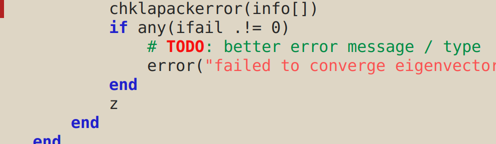
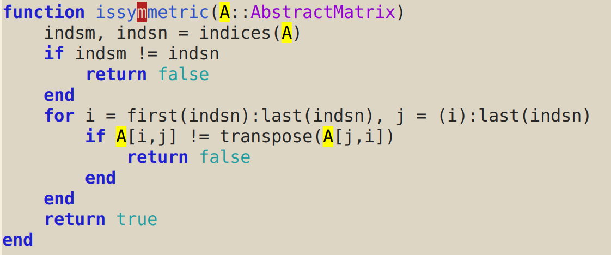
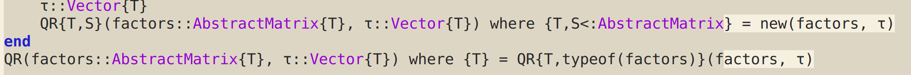

Emacs customizations for julia-mode
2017/08/28I find the following customizations very useful for editing Julia
code in Emacs. Add them to julia-mode-hook, eg
(defun customize-julia-mode ()
"Customize julia-mode."
(interactive)
;; my customizations go here
)
(add-hook 'julia-mode-hook 'customize-julia-mode)
Highlight FIXME/TODO/…
When I just want to note something in a comment for future reference, I prefer to have certain words highlighted. You can use something like this:
(font-lock-add-keywords nil
'(("\\<\\(FIXME\\|TODO\\|QUESTION\\|NOTE\\)"
1 font-lock-warning-face t)))
This is what it looks like:

Highlight symbols
After
(require 'highlight-symbol)
add a hook for
(local-set-key [(control ?c) ?s] 'highlight-symbol-at-point)
(local-set-key [(control ?c) ?n] 'highlight-symbol-next)
(local-set-key [(control ?c) ?p] 'highlight-symbol-prev)
This highlights symbols with C-c s:

Fill docstrings
This is useful if you want to use M-q on docstrings.
(defun julia-fill-string ()
"Fill a docstring, preserving newlines before and after triple quotation marks."
(interactive)
(if (and transient-mark-mode mark-active)
(fill-region (region-beginning) (region-end) nil t)
(cl-flet ((fill-if-string ()
(when (or (looking-at (rx "\"\"\""
(group
(*? (or (not (any "\\"))
(seq "\\" anything))))
"\"\"\""))
(looking-at (rx "\""
(group
(*? (or (not (any "\\"))
(seq "\\" anything))))
"\"")))
(let ((start (match-beginning 1))
(end (match-end 1)))
;; (ess-blink-region start end)
(fill-region start end nil nil nil)))))
(save-excursion
(let ((s (syntax-ppss)))
(when (fourth s) (goto-char (ninth s))))
(fill-if-string)))))
Add
(local-set-key (kbd "M-q") 'julia-fill-string)
to the mode hook.
Highlight things after column 80
I add this to the mode hook:
(set-fill-column 80)
I also use whitespace globally:
(require 'whitespace)
(setq whitespace-style '(face empty tabs lines-tail trailing))
(global-whitespace-mode t)
This is what it looks like:

Hungry delete-mode
Add this to the mode hook:
(hungry-delete-mode)
and then backspace and delete will remove all whitespace near the point in the relevant direction.
In case you are wondering, the theme is alect-light.
comments powered by Disqus